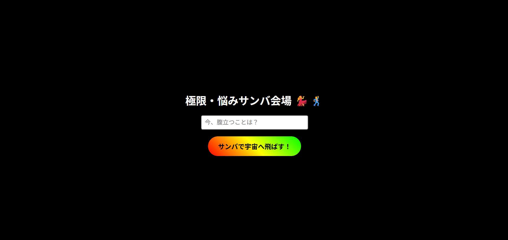

About Me
多様な職種での勤務経験を背景とした「ユーザー視点の課題解決力」を強みとしています。
Projects

Technical Stack
-
Excel VBA 3年
【実績】試験申込業務の自動化（保険会社）
徹底した傾聴から業務フロー自体を再設計し、作業時間を9.5時間から4時間へ削減（50%以上の効率化）を実現。保守性を考慮した構造化コーディングを行い、組織の資産となるツールを構築しました。
-
Linux(RHEL) 1年
【実績】社内SSOシステムの運用・保守・構築（電力関連システム開発会社）
SSOシステムの運用・保守・構築を担当。開発環境の設定対応や手順書作成、ベンダー調整および社内レビュー向けの資料作成などに従事しました。
-
HTML/CSS 1年
【実績】レスポンシブサイトの作成（電力関連システム開発会社）
社内業務システムリンク集サイトのレスポンシブ化を担当。
Learning Currently
-
JavaScript (モダン開発) 3ヶ月
【挑戦中】「負の感情を可視化・解消するWebアプリ」の制作
Web講座や書籍で得た基礎知識をベースに、AIを活用しながらポートフォリオとなるWebアプリを自作中。人の「感情」に寄り添ったツール開発に挑戦しています。
-
Python (アルゴリズム・自動化) 半年
【学習中】アルゴリズムへの理解とコーディングテスト挑戦
Paizaにてコーディングテストに挑戦し、論理的なアルゴリズム思考を訓練中。業務効率化だけでなく、より効率的なコードを書くための土台を築いています。
-
Java (オブジェクト指向の基礎) 1年
【ステータス：休止中】Java Silver取得に向けた学習
黒本を1周し、模試得点率50%程度まで習得。現在は実務直結の他言語を優先していますが、静的型付け言語の基礎知識は別言語の学習にも活かされています。